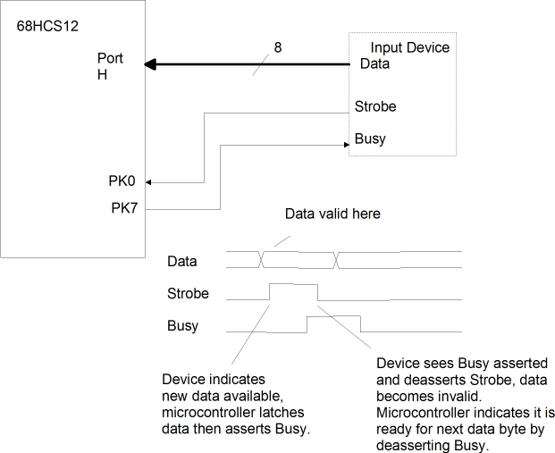

Questions
Questions with provided answers have links to the answers.
Questions that are other than short answers or small coding
segments, such as projects, are
indicated with the word
PROJECT. Questions that are
significantly more difficult or potentially time consuming are indicated with the word
DIFFICULT.
Microcontroller Overview,
Binary Number Representation ,
The Central Processing Unit (CPU),
Development Tools,
68HC12 Instruction Set Overview,
Load, Store and Move Instructions,
Arithmetic Instructions,
Branching and Iteration,
Using Tables and Arrays,
Decision Trees and Logic Instructions,
The Stack and Subroutines,
Input/Output Overview,
Electrical Characteristics ,
General Purpose I/O Pins,
Parallel I/O Ports,
System Clocks,
Interrupts, Traps, and Resets,
External Interrupts,
The RTI and COP interrupts,
The Timer Module,
Pulse Width Modulation,
The Analog to Digital Converter,
External Memory/Peripheral Interfacing,
Serial Communications Interface,
Serial Peripheral Interface,
Inter-Integrated Circuit Bus Interface,
Other Serial Interfaces,
EEPROM Memory and Internal Resource Mapping,
Scaled Integer Arithmetic,
Floating Point Arithmetic,
Fuzzy Logic
- What are the parts of a microcontroller?
- What is a byte?
- What is a word?
- What is the difference between static and dynamic RAM?
- What is the difference between RAM and ROM?
- Name five different I/O devices or interfaces commonly found in
microcontrollers.
- PROJECT There are many
microcontrollers available besides the Freescale Semiconductor
68HCS12. Research other microcontrollers and report on how the memory
and I/O devices differ from the 68HCS12 family discussed in the text.
Suggested 8-bit microcontrollers: Intel 8051, Microchip PIC18, and the Atmel
AVR families.
Return to top of page
- The 16 bit value $8002 represents what unsigned integer?
...represents what two's complement signed integer? ...represents what
one's complement signed integer?
- The 16 bit value $7800 represents what unsigned integer?
...represents what two's complement signed integer? ...represents what
one's complement signed integer?
- The 16 bit value $FE00 represents what unsigned integer?
...represents what two's complement signed integer? ...represents what
one's complement signed integer?
- Convert the decimal values 31 and 22 to 8 bit binary, add them together, and convert the sum back to decimal. Show your
work for each step of the problem.
- Convert the decimal values 31 and -22 to 8 bit two's complement binary, add them together, and convert the sum back to decimal.
Show your work for each step of the problem.
- Convert the decimal values -31 and 22 to 8 bit two's complement binary, add them together, and convert the sum back to decimal.
Show your work for each step of the problem.
- Multiply the 8-bit two's complement values 11001001 and
00111100 together to form a 16 bit product. Show your work.
- Multiply the 8-bit two's complement values 11001001 and
10111100 together to form a 16 bit product. Show your work.
- What range of unsigned decimal values can be represented in a
byte and in a 16-bit word?
- What range of two's complement decimal values can be represented in a
byte and in a 16-bit word?
- What is the binary representation of the decimal value 2130?
What is the BCD representation?
- PROJECT Using any programming
language with which you are familiar, write a program that converts
an integer to a string of decimal digits using the algorithm given
in the text. Run the program to verify that the algorithm
works.
- PROJECT Using any programming
language with which you are familiar, write a program that converts
a string of decimal digits to an integer using the algorithm given
in the text. Run the program to verify that the algorithm
works.
Return to top of page
- When executing an instruction, does the PC register contain the
address of the instruction being executed or the address of the
following instruction?
- List four operations that can be performed by most central
processing units.
- In the CPU Demonstration, which instruction would probably
execute the fastest? Why?
- Is the 68HCS12 big-endian or little-endian?
Why?
- List three characteristics of a CPU register.
- What is the distinction between an accumulator and an
index register?
- What is the relationship between accumulators A and D in
the 68HCS12?
- A program loads the value $6655 into register D, then loads
$32 into register A, then loads $21 into register B. What will be
the contents of register D?
- A program loads the value $1234 into register D, then loads the value $42 into register B, then loads the value $7766 into
register X. It then stores the value in register D into memory location $2000 through $2001. What is the content of byte memory
location $2001?
Return to top of page
- PROJECT The following program
(with one added instruction) was
used in the previous section to demonstrate the CPU:
org $1000 ; Set current location to start of RAM
p: db $25 ; First addend is at location p
q: db $37 ; Second addend is at location q
r: ds 1 ; Sum will be stored at location r
org $2000 ; Set current location to start in ROM
ldaa p ; load value at p into accumulator a
adda q ; add value at q into accumulator a
deca ; decrement a
staa r ; store accumulator a at location r
swi ; return to DBUG-12
end
Using the tools on the CD, assemble then simulate this program.
Your results should be the same as if your run the program from
directly from the browser.
- PROJECT Assemble, load, and run the
same program from question 1 on real hardware, such as the DRAGON12
board. You may need to change the addresses used depending on the
specific microcontroller version you have.
- ADVANCED PROJECT Rewrite the
program from question 1 in the C language so that it calculates the
value of unsigned char variable r from p and
q. Compile, load and run on
either the simulator or real hardware. The GNU C compiler and an IDE
are provided on the CD.
- ADVANCED PROJECT Using the BDM
interface, load and run the program from question 1. This can be
done using two DRAGON12 boards and a 6 pin cable.
Return to top of page
In the first eight questions, tell what register and/or memory location changes, and what the new value will be. Assume the following
initial register values for all questions: A=$10, B=$12, X=$2345, Y=$4567
- ldaa #$13
- staa 9000
- stab 23,x
- std 0,y
- staa 2,+y
- staa 2,y+
- stx 2,-x
- std a,x
- std [$10,x] (You will need to make an additional assumption
for this question.)
- How many bytes long and how many clock cycles does it take to
execute the instruction ASR $1000?
- The instruction ADDD #1 will increment the contents of accumulator D. How many bytes long is this instruction and how many
clock cycles does it take to execute?
- There are always multiple ways to accomplish the same task. The instruction sequence EXG D X; INX;, EXG D X will also
increment the contents of accumulator D. How many bytes long is the instruction sequence and how many clock cycles does it
take to execute?
- PROJECT There are many
microcontrollers available besides the Freescale Semiconductor
68HCS12. Research other microcontrollers and report on how the CPU
architecture and instruction set differs from the 68HCS12 family discussed in the text.
Suggested 8-bit microcontrollers: Intel 8051, Microchip PIC18, and the Atmel
AVR families.
Return to top of page
- Memory location $1000 contains an unsigned value. What instruction or instruction sequence will load that value into index register
X?
- Memory location $1001 contains a signed value. What instruction or instruction sequence will load that value into index register
X?
- Memory location $1002 contains an unsigned value. What
instruction or instruction sequence will load that value into
accumulator D?
- Memory location $1003 contains a signed value. What instruction
or instruction sequence will load that value into accumulator
D?
- What instruction will set the contents of index register X
to zero?
- What two different instructions will each set the contents of
accumulator A to zero while affecting no other registers?
- What two different instructions or instruction sequences will copy the signed
byte value at memory location $1000 to the the byte memory location
$1001?
- Without using any accumulator or index register, what instruction or instruction sequence will copy the unsigned
byte value at memory location $1000 to the word starting at memory location
$1002?
- What instruction or instruction sequence will copy the signed
byte value at memory location $1000 to the word starting at memory location
$1002?
Return to top of page
- Accumulator A contains a value in the range 10 through 100. Can
the value be considered signed? Can it be considered unsigned?
- Accumulator A contains a value in the range 10 through 150. Can
the value be considered signed? Can it be considered unsigned?
- Accumulator B contains a value in the range 10 through 150.
Accumulator A contains the value 0. If the value in accumulator D is
considered to be signed, does the value in accumulator D equal the
value in accumulator B?
- A byte value in the range -10 to -1 is added to a byte value in
the range 50 to 128. Can the sum be considered to be signed? Can it
be considered to be unsigned?
- An unsigned byte value is to be added to a signed byte value.
How should the result be represented? Assuming that the unsigned
byte is at location $1000 and the signed byte is at location $1001,
write the code that will add the two values to produce a correct
sum.
- Write a code sequence which will increment the four byte value at
location $1020 through $1023. The value is stored in big-endian
order.
- Write a code sequence which will add the three byte unsigned
integer value stored in locations $1000
through $1002 into the three byte unsigned integer value at locations
$1100 through $1102. The values are stored in big-endian
order.
- Write a code sequence which will add the three byte unsigned
integer value stored in locations $1000 through $1002 and the three
byte unsigned integer value stored in locations $1100 through $1102
storing the four byte sum (four bytes because of the possible carry
out of the most significant bit of the three byte values) in
locations $1200 through $1203. The values are stored in big-endian
order.
- Write a code sequence which will shift the signed three byte value in
location $1020 through $1022, big-endian, to the right by two bit
positions.
- Write a code sequence which will load the largest unsigned value
contained in the memory bytes at locations $1000 through $1003 into
accumulator A
- PROJECT Write a program that will
convert a signed word value representing a temperature in degrees
Fahrenheit into degrees Celsius and store the value into a signed
word variable. The variables should be named FA and
CE. Test the program using the Fahreheit temperatures -40,
32, and 212.
Return to top of page
- Why would one use the JMP instruction instead of the BRA
instruction?
- Why is it important to know whether the values to be compared are
signed or unsigned?
- How much time is saved by using the DBNE instruction instead of a
decrement instruction (DECA, DECB, DEX, or DEY) followed by a BNE
instruction? Assume the branch is taken (it almost always will be
taken).
- The instruction sequence CLRA; L: INCA; BNE L is used to delay the execution of a program. How much time does it take to
execute this code sequence (in terms of clock cycles)?
- Write a code sequence using an iteration control structure which
will clear memory locations $2000 through $200F.
- Write a code sequence using an iteration control structure which will store the value $23 into memory
locations $2000 through $2010.
- Write a code sequence using an iteration control structure which
given a starting address in register X, an ending address in Y, and
a value in B, will store the value in B into the location specified
in X through the location specified in Y.
- Write a code sequence using an iteration control structure which
given a starting address in register X, a count in accumulator A, and
a value in B, will store the value in B into the location specified
in X for a total of A bytes. Note that A is unsigned and might be
zero.
- Write a code sequence using an iteration control structure which will add together all the (unsigned)
bytes in memory locations $2000 through $2010, storing the sum in
accumulator D.
- DIFFICULT Write a code sequence that will multiply the (unsigned) contents of
accumulators A and B, putting the product in X. Do not use any
multiply instructions. Hint -- multiplication is just multiple
additions.
Return to top of page
- There is a 5 byte table of unsigned integers, named T0, and a 5
word array of signed integers named A0. Write an
instruction sequence using an iterative control structure which will
copy the byte values of table T0 into the words of array A0.
- There is a 10 byte table of signed integers, named T1, and a 10 word array of signed integers named A1. Write an
instruction sequence using an iterative control structure which will
copy the byte values of table T1 into the words of array A1.
- DIFFICULT A two dimmensional array
of words A10x5
with 10 rows and 5 columns is stored in row order -- the first 10
locations contain the 5 values of the first row, the second 10
locations contain the 5 values of the second row, and so forth.
Write the code that will load an array value into accumulator D, given
that accumulator A has the desired row index (0 through 9) and B has
the desired column index (0 through 5).
- Study the ASCII chart then write a code
sequence that will replace the value 0 through 15 in accumulator A
with the character "0" through "9" then
"A" through "F" respectively. Use a conversion table to solve this problem.
- PROJECT Write a program that converts
a 16 bit integer named val to a 5 byte array of decimal
digits named string using the algorithm given in Conversion from
Value to Digits. Run the program to verify that the algorithm
works.
- PROJECT Write a program that
converts a 5 byte array of decimal digits named string to a
16 bit integer named val using the algorithm given in Conversion from
Digits to Value. Run the program to verify that the algorithm
works.
- PROJECT
Write an instruction sequence using an iterative control structure
which will reverse the order of the bytes in an array. Assume the
address of the array is in X and the number of bytes is in B. You will
probably need additional memory locations for variables although it is
DIFFICULT but possible to solve the problem using only registers A, B, X, and
Y.
- PROJECT DIFFICULTThe table interpolation
example in the text has a divide instruction which is necessary
because the table entries are 10 degrees apart. We could simplify
the program, eliminating the divide, by haveing the table entries 8
degrees apart and shifting register D right by three bit positions.
Create a new sine table and rewrite the program for this different
approach. Run the program to verify that the algorithm works.
Return to top of page
- Write a code sequence that will replace the unsigned integer in
accumulator A with 0 if its value is greater than 10, and replace
the value with 1 if its value is less than or equal to 10.
- Write a code sequence which given a signed value in accumulator
D will calculate its absolute value and store it in index register X.
Accumulator D should still have its original value after the calculation is
made.
- Write a code sequence which "limits" the signed value in
accumulator A to be in the range 10 through 20 inclusive. For
example, if the value is -5, it will be increased to 10, if the value
is 25 it will be decreased to 20, and if it is in the range 10
through 20, it will be unchanged.
- Study the ASCII chart then write a code
sequence that will replace the value 0 through 15 in accumulator A
with the character "0" through "9" then
"A" through "F" respectively. You may not use a
conversion table to solve this problem.
- What instruction or instruction sequence will clear (make
"0")
bits 3 and 4 of byte memory location $1200?
- What instruction or instruction sequence will set (make
"1")
bit 4 of memory location $1202?
- What instruction or instruction sequence will clear all bits of
memory location $1210?
- What instruction or instruction sequence will toggle
(complement) all bits of memory location $1220?
- Write an instruction sequence that will count the
number of "1" bits in memory location $1230, storing the count into
memory location $1231. The original contents of location $1230 does
not have to be preserved.
- DIFFICULT Write an instruction sequence that will branch to location
foo if there are two adjacent "1" bits in
accumulator A.
Return to top of page
- Why is it important that the stack pointer be initialized
before the stack is used?
- Why is it important within an iterative control structure that
every byte pushed on the stack is pulled off the stack?
- Why is it important within a subroutine that every byte pushed
on the stack is pulled off the stack before returning?
- If a byte value is pushed on the stack and then pulled off the
stack using PULD, what will be the contents of accumulator
D?
- Does the stack pointer contain the address of the last value to
be pushed on the stack or address of the next free memory for the
stack?
- How can you exchange two register values using the stack? Give
an example.
- What instruction sequence will pull the top three bytes from
the stack, adding them to the contents of accumulator A?
- How would one push the value in byte location $2001 on the
stack?
- Write a subroutine which will calculate the absolute value of
the contents of accumulator D. A code sequence which uses this
subroutine would look like this:
ldd #-123 ; put value in D
jsr absval
; result is in D
- Write a subroutine which will calculate the absolute value of a
16 bit value pushed on the stack before the subroutine is called.
The absolute value should be returned in accumulator D, and the
argument value left on the stack. A code sequence which uses this
subroutine would look like this:
movw #-123 2,-sp ; push value on the stack
jsr absval
leas 2,sp ; add two to stack pointer
; result is in D
- DIFFICULTWrite a subroutine which will calculate the absolute value of a
16 bit value pushed on the stack before the subroutine is called.
The absolute value should be returned in accumulator D, with the
argument removed from the stack. A code sequence which uses this
subroutine would look like this:
movw #-123 2,-sp ; push value on the stack
jsr absval
; result is in D
- PROJECT Two values P and
Q can be exchanged with the three step sequence P xor Q =>
P, P xor Q => Q, P xor Q => P. Write a subroutine that given the
addresses of two arrays in index registers X and Y and the length of
the arrays (which must be the same) in accumulator B will replace
the array at Y with X xor Y. You will need to exclusive-or every
byte in the array at Y with that of the array at X, storing the
result back in Y. Push the subroutine arguments
on the stack at the start of the subroutine and pull them off of the
stack at the end of the subroutine so that the initial values will
be preserved. Test the subroutine
to make sure that it works. Then write a new subroutine which has
the same arguments and will exchange the contents of the two arrays
by calling the first subroutine three times.
Return to top of page
- Does the 68HCS12 have CPU instructions specifically intended
for accessing I/O device registers? Why or why not?
- List the three types of I/O device registers. Indicate which
can be read and which can be written.
- Which of the following peripheral devices and interfaces are built into the MC9S12DP256 (indicate all that apply)?
- Analog to digital converter
- Digital to analog converter
- Global positioning system
- Serial peripheral interface
- Enhanced capture timer
- Infrared transmitter
- IIC bus interface
- CAN bus interface
- Liquid crystal display
- Look up the documentation for the Serial Peripheral Interface
(SPI) I/O device module. List the register names and the register type
they belong to.
- Look up the documentation for the Serial Communication Interface
(SCI) I/O device module. List the register names and the register type
they belong to.
- What CPU instructions are typically used to set or clear
individual bits of a device register?
- What CPU instructions are typically used to test bits of a device
register?
- What is the advantage of using interrupts instead of polling for
an input device?
- What is the advantage of using interrupts instead of polling for
an output device?
Return to top of page
- What must be done with unused inputs on the 68HCS12? Why?
- About how much power can be saved by dropping the clock speed
from 24 MHz to 8 MHz?
- Under what conditions can the 68HCS12 output pin drive TTL
devices?
- Under what conditions can a TTL device drive a 68HCS12 input
pin?
- What two things must be done when connecting a mechanical
switch to the microcontroller as an input device?
- A synchronous interface has an output propagation time (from
active clock edge) of 10ns, an input setup time of 10 ns, and an
input hold time of 5 ns. Assuming no clock skew (output and input
devices have clock edges that occur at the same time) what is the
maximum clock rate possible without breaking an input timing
specification?
- Assume the same interface given in the preceding question,
and a 10 MHz clock, but with clock skew. What is the maximum amount
of time the clock for the input can lead (occur before) the clock
for the output? What input timing specification is broken?
- Under the same conditions as the preceding question, what is
the maximum amount of time the clock for the input can lag (occur
after) the clock for the output? What input timing specification is
broken?
Return to top of page
- Port M pin 3 is to be used as an input. There is to be no
internal pullup/pulldown used. What sequence of instructions will
configure port M to insure this operation? What instruction can be
used to test and branch to location foo on port M pin 3
being logical '1'?
- Port J pin 1 is to be used as an output with full drive
strength. What sequence of instructions will configure port J to
insure this operation? What instruction can be used to drive the
pin to a logical '1'? What instruction can be used to drive the pin
to a logical '0'?
- Port T pin 7 is to be connecting to a
wired-or circuit. It is to provide the pull-up resistor for the
circuit, but otherwise not initially drive the circuit. What
sequence of instructions will configure port T for this operation?
What instruction will drive the circuit low? What instruction can
be used to test and branch to location foo on the circuit
being a logical '0'?
- Port M pin 0 is to be used as a three-state output pin. What
sequence of instructions will drive the pin to a logic '1'? What
sequence of instructions will drive the pin to a logic '0'? What
sequence of instructions will drive the pin to high impedence? All
three answers should make no assumptions as to the original
state.
- Port A pin 4 is to be used as an input, with pullups enabled.
What sequence of instructions will
configure port A to insure this operation? What instruction can be
used to test and branch to location foo on port A pin 4 being logical '1'?
- When an I/O pin is assigned to an internal I/O device, what
general purpose pin functionality is still available?
- What are the advantages of using the reduced drive capability
of the output pins? What are the disadvantages?
- The upper four bits of port A are to be used for inputs while
the lower four bits of port A are to be used for outputs. Write the
code sequence that will configure port A then repeatedly copy the
value on the uppoer four bits to the lower four bits of the port.
Return to top of page
- What sequence of instructions will
generate a positive pulse on port J pin 0, assuming the pin
is initially configured for output and is in the low state.
Assuming a 24 MHz system clock, what will be the width of
the pulse?
- Ports K and H are to be used to implement a parallel output port. In use, a byte of data is driven out of port H then the least significant bit of port K is
pulsed (driven high then driven low) to indicate that new data is available. The other bits of port K may be used for other operations, so we will leave them
alone in this assignment. We wish to use reduced drive current whenever possible to reduce noise. Write the code necessary to configure the
MC9S12DP256 for this operation and to initialize the appropriate port pins for output. Then write the code which will output a byte of data that is in
accumulator A and then pulse the LSB of port K.
- Ports K and H are to be used to implement a parallel input port with full handshaking. Port H is used for data input, Port K pin 0 for strobe input, and Port
K pin 7 for busy output. We wish to reduce drive current whenever possible to reduce noise. Write the code necessary to configure the MC9S12DP256 for
this operation and to initialize the appropriate port pins for output. Then write the code which will input a byte of data into accumuator A, controlling the
Busy output and monitoring the strobe input as necessary.

- PROJECT On the Dragon-12 board, or
the simulator simulating the Dragon-12 board, there is a row of
slide
switches connected to port H for input and a row of
LEDS connected to port B for output (which require port J pin 1
be configured for output and be driven to 0). Write a program that
will repeatedly read the switch settings and then illuminate the
corresponding LEDs. The program must work for all switch
combinations. Test the program on either the Dragon-12 or the
simulator.
- PROJECT On the Dragon-12 board, or
the simulator simulating the Dragon-12 board, there is a row of
four
pushbuttons connected to the four least significant bits of port H for input and a row of
LEDS connected to port B for output (which require port J pin 1
be configured for output and be driven to 0). Write a program that
will repeatedly read the push button settings and then illuminate the
corresponding LEDs in the following manner: pressing the rightmost
button should light the LEDs on pins 4 and 0, pressing the next
button should light the LEDs on pins 5 and 1, and so on. The
program must work for all button combinations. Test the program on either the Dragon-12 or the
simulator. Be sure that the slide switches are in their open (off)
position.
- PROJECT DIFFICULT On the Dragon-12 board or the
simulator simulating the Dragon-12 board, there are four
seven-segment digit LED displays. Write a program that will
repeatedly read the push button settings and then illuminate a "0"
in the leftmost digit if the leftmost button is pressed, illuminate
a "0" in the second digit from the left if the second button from
the left is pressed, and so on. The program must work for all
button combinations. Test the program either on the Dragon-12 or
the simulator. Be sure that the slide switches are in their open
(off) position.
Return to top of page
- How does the 68HCS12 know whether a crystal or external
oscillator is being used for the clock source?
- What parts of the 68HCS12 will always operate at the
crystal frequency, regardless of the setting of the PLL?
- A 7 MHz crystal is used in an MC9S12DP256 system. Write the
code necessary to have a 24 MHz SYSCLK. What would be the clock speed
before the phase lock loop is enabled?
- An 8 MHz crystal is used in an MC9S12DP256 system. Write the
code necessary to have a 25 MHz SYSCLK. What would be the clock speed
before the phase lock loop is enabled?
- DIFFICULT Using the formulas
given in the documentation, calculate the optimal PLL filter values
Cs, Cp and R given a 4 MHz
crystal, SYNR=5, and REFDV=0.
Return to top of page
- What makes a reset distinctive from a trap
or interrupt?
- What makes a trap distinctive from a reset or interrupt?
- What makes an interrupt distinctive from a reset or trap?
- An SCI1, an XIRQ, and an Enhanced Timer Channel 0 interrupt
occur simultaneously. Assuming all are enabled, in what order
will they be serviced?
- What registers are initialized as a result of a power-on
reset?
- What initialization must be performed before using
interrupts?
- What must an interrupt service routine do before returning?
- What is the difference between the rti and
rts instructions?
- What is the advantage of using the WAI instruction instead of
a "bra *" in an idle loop/process?
- What sequence of assembler directives will set the SCI0
interrupt vector to be the address of routine SCIISR?
- Assuming that D-Bug12 is being used, what sequence of
instructions will set the SCI0 interrupt vector to be the address of
routine SCIISR?
Return to top of page
- What initialization must be done to enable the IRQ
interrupt?
- What initialization must be done to enable the XIRQ interrupt?
- Give three differences in operation between using the IRQ pin
and a Key Wakeup pin for an external interrupt source.
- PROJECT The text has an example program that counts the number of IRQ
and XIRQ interrupts. Extend the program to have an interrupt
whenever there is a rising edge on pin PJ0, and count the number of
these interrupts. Test the program in the simulator.
- PROJECT On the Dragon-12 board, the
row of four pushbuttons connected to the four least significant
bits of port H for input. Write a program that will count the number
of times each button has been pressed by using the Key Wakeup
feature of port H. Store the counts in four bytes labeled CNT0,
CNT1, CNT2, and CNT3. Test the program both using the simulator and
using the board.
- PROJECT
DIFFICULT Obtain a flipflop (such as a 74LS74), a
resistor about 1k ohm, and a
pushbutton switch and connect them to the 68HCS12 microcontroller
similar to the second figure in the textbook section. Use the
resistor as a pulldown for the clock input of the flipflop and have
the switch connect between the input and 5 volts. Write a program
that will count the number of times the switch has been toggled.
Test the program on the hardware.
Return to top of page
- Why might the COP Clock Monitor be an important feature?
- With a 4 MHz crystal and 24 MHz system clock, what would be the minimum
timeout period for the COP failure interrupt?
- With a 4 MHz crystal and 24 MHz system clock, what would be the maximum
timeout period for the COP failure interrupt?
- With an 8 Mhz crystal and 24 MHz system clock, what would be the minimum
period between interrupts for the RTI interrupt? What would be the
maximum period?
- With an 8 Mhz crystal and 24 MHz system clock, what would be
the maximum
period between interrupts for the RTI interrupt?
- PROJECT Write a program to test
the COP failure and test it in the simulator. First configure the
COPCTL register for a value of your choice, and measure how long it
takes for the COP reset to occur. Then modify the program to write
an invalid value to ARMCOP and measure how long it takes for the
COP reset to occur. Finally, add the idle loop as shown in the text
and observe that the COP reset does not occur.
- PROJECT Another way to determine
if a program is running is to have a "heartbeat"
interrupt that flashes an LED at a slow rate to indicate the system
is operating. Use the RTI interrupt to flash an LED at roughly
4 Hz. That means you need roughly 8 interrupts per second, each
interrupt turning the LED on or off.
Return to top of page
- PROJECT Use the timer module TCNT
register to measure the time it takes to execute
clra
l1: dbne a l1
After configuring the counter for it's fastest rate, first measure
the overhead time, which is the difference between two TCNT
readings with no code executed between the readings. Then add the
code, measure, and subtract the overhead time. Perform the
measurment both using the simulator and hardware and compare the
results of both with the predicted time
- It is desired to use the timer module to measure the period of
a signal applied to pin 0 of port T using polling rather than an
interrupt. The period could be as long as
0.1 seconds and we don't want to handle TCNT overflow. The system clock is 24 MHz. The timer module is not
used for any other purpose. What code sequence will configure
channel 0 for operation?
- Timer channel 2 is to be used to generate a square wave with a
period of 15 microseconds. The generator is interrupt driven, with the
name of the interrupt routine being genint. The timer module
is not used for any other purpose. What code sequence will configure
timer channel 2 for operation? Assume the system clock is 24 MHz and
TFFCA=0.
- Continuing from the last question, write the code for the interrupt service
routine, genint, assuming TFFCA=0.
- Continuing from the last question, if TFFCA=1, what would be the code for the
interrupt service routine?
- PROJECT Timer channel 2 is to be used to generate a squarewave with a 66.6% duty cycle - 10 microseconds high alternating with 5
microseconds low. Write a program which uses no interrupts which will
generate the waveform. Test the program using either the simulator or
hardware (measuring the signal with an oscilloscope).
- PROJECT Timer channel 2 is to be used to generate a squarewave with a 66.6% duty cycle - 10 microseconds high alternating with 5
microseconds low. Write a program which uses an interrupt service
routine to generate the waveform. Test the program using either the simulator or
hardware (measuring the signal with an oscilloscope).
- PROJECT It is desired to measure
the period of time between the rising and falling edges of a signal
applied to Port T pin 3. An interrupt service routine for timer
channel 3, timeint, needs to alternate between being
triggered by the rising and falling edges. For rising edges it should
set a word variable STARTTIME with the time of the edge. For
falling edges, it should subtract STARTTIME from the time of
the falling edge and store the time in LAPSEDTIME. The
measurement must be made with the maximum resolution possible. Write a
program which accomplishes this. Test the program using either the simulator or
hardware (you will need a signal generator -- be sure not to drive the
input beyond the voltage range 0 to 5 volts).
- PROJECT Using the special
capabilities of channel 7, write a program that generates pulses at a
10 kHz rate on all eight timer channels. The pulses on channel 0
should be 1 ms wide, those on channel 1 should be 2 ms wide, and so
forth to channel 7 being 8 msec wide. The program should configure the
timer module and then enter an idle loop. No interrupt routine should
be used. Test the program using either the simulator or hardware (you
will need an oscilloscope to check the operation in hardware).
- The pulse accumulator is to be used in Gated Time Accumulation
Mode to measure the length of time PT7 is high. The system clock is
20MHz using the PLL and the crystal frequency is 5MHz. The accumulated
value in PACN3/PACN2 is $1000. How much time does that represent?
- A 1Mhz signal is applied to pin PT7, PACTL is initialized to $4C,
TSCR1 is initialized to $80, and TSCR2 is initialized to $07. The
system clock is 24MHz using the PLL, and the crystal frequency is
4MHz. At what rate does TCNT increment?
Return to top of page
- Assuming a 25 MHz system clock using the
PLL and a 5 MHz crystal, what pulse width modulator settings will
create a period of 5.4 microseconds with a positive going pulse
width of 2.4 microseconds on channel 2?
For questions 2 to 5, assuming a 24MHz system clock using the PLL and
an 8 MHz crystal, what pulse width modulator settings will allow the following for channel
0:
- Period of 20 microseconds with a positive going pulse width of 2 microseconds.
- Period of 20 microseconds with a positive going pulse width of 8 microseconds.
- Period of 1 millisecond with a negative going pulse width of 3 microseconds.
- Period of 1 millisecond with a negative going pulse width of 8
microseconds.
- PROJECT Build a low-pass RC filter
with a 3dB down point at 1 kHz. Connect the filter to one of the PDM
outputs. Connect a voltmeter to the output of the filter. Configure
the PDM with a period of 10 microseconds, and record the voltage for
pulse widths of 0 through 10 microseconds in steps of 1 microsecond.
How accurate is the PDM plus the filter as a digital to analog
converter?
- PROJECT DIFFICULT Obtain a servo motor from a
hobby shop. These are commonly used in radio controlled models and
robotics, and are controlled with a pulse width modulated signal. The
period is 20 ms and the positive pulse width varies from 1.25 to 1.75
ms to change the servo position over its range. Write a program that
will sweep the servo position over its full range, going through a
complete cycle every ten
seconds. Use a timer channel interrupt service routine to sweep the
value in the PWMDTY register. Increase the pulse width by 0.01ms every
100ms for five seconds, then decrease the pulse width by 0.01ms every
100ms for five seconds.
Return to top of page
- Assuming a system clock of 25MHz, what ATD prescaler value
should be used to obtain the fastest conversion time? (The
prescaler value is PRS4, PRS3, PRS2, PRS1, and PRS0 in
ATD0CTL4).
- Assuming 10 bit conversion mode, what is the time to perform a
sequence of four conversions under the conditions of question 1?
- With the high reference voltage set to 4.5 volts and the low
reference voltage set to 0.5 volts, and 2 volts applied to the ATD
input, what measurement code is expected assuming a 10 bit,
right-justified conversion?
- With the high reference voltage set to 5 volts and the low
reference voltage set to 0 volts, what voltage corresponds to
the 10-bit, right-justified ATD
conversion value of 150 (decimal)?
- What is the resolution of the ATD if the high reference voltage is
5 volts, the low reference voltage is 0 volts, and 8 bit conversion
mode is used?
- If interrupts are used and SCAN=0, how does the interrupt service
routine clear the interrupt flag ASCIF? How does it clear the
intterupt flag if SCAN=1?
- What combination of configuration bits will cause the values to be
signed and left justified and 8 bits long?
- What values needs to be stored into ATD0CTL3 and ATD0CTL5 to
perform a single sequence of 3 conversions on pin PAD04? Assume
10-bit, right justified, unsigned values. From where can the converted values be retrieved?
- What value needs to be stored into ATD0CTL3 and ATD0CTL5 to
perform continuous conversions (instead of a single sequence) of all 8
pins? Assume the FIFO bit is 0. Assume 10-bit, right justified, unsigned
values. Given your answer to question 9, where is can the value for pin
PAD05 be retrieved?
- PROJECT Connect an adjustable
volltage source to one of the ATD input pins. Write a program that
will turn on the ATD module and perform a single conversion of the
voltage on the input pin you have connected to the voltage source.
Adjust the source for voltages from zero to five with one volt steps,
running the program at each step and recording the conversion code.
Build a table with columns for the voltage, the ATD code, and the
code converted to a voltage. How accurate is the ATD?
Return to top of page
The first seven questions refer to the MC68HC812A4 microcontroller.
This microcontroller has the following control signals for
connecting external memory: ECLK, R/*W, *LSTRB, and sometimes
ADDR0 can be considered a control signal.
- When connecting external ROM memory, which control signals are
used?
- When connecting external RAM memory in Expanded Wide Mode, which
control signals are used?
- In Expanded Narrow Mode, how are word reads and writes
performed?
- In Expanded Wide Mode, performing a byte write to RAM, how is the
appropriate memory chip (even or odd address) selected?
- In Expanded Wide Mode, how is a word memory access performed on an
odd word address?
- When connecting two 8kx8 RAM memories, one for even addresses and
one for odd addresses, in Expanded Wide mode, how are the 16 address
lines from the microcontroller connected to the RAMs?
- If the chip select signals were not present, how could external
devices still be connected to the microcontroller? Give an example for
the equivalent to CS0. What limitations would there be?
- How is a word memory access performed to an odd word address in
internal RAM?
- List the control signals on the MC9S12DP256 which are used for interfacing RAM memory in Expanded Narrow Mode.
- How many address lines are there on the MC9S12DP256?
- What technique is used in the MC9S12DP256 to reduce the number
of pins necessary for the external memory interface compared to that
of the MC68HC812A4?
- In the MC9S12DP256, what is the size of the memory page? What
page numbers are mapped into the 256kB flash memory?
- How does one access physical address
$E5002?
- If PPAGE is set to $35, ldaa $8100 will reference what physical
address?
- Physical addresses $FFFFE and $FFFFF contain what important
value?
- How many clock cycles does it take to execute the instruction
ldd $C001?
- If we are using external memory with a clock stretch of 3 and
have the PPAGE register set to select the external memory, how many
clock cycles would it take to execute ldaa $8100 if the instruction
were in internal memory?
Return to top of page
- In RS-232 communcation, what voltage range represents a
"space" and does a "space" represent a "0" or a "1" bit?
- When the SCI is used for an RS-232 interface, how does one detect
that a "break" has been received?
- Is the least significant bit transmitted first or last?
- Describe the meaning of overrun error, framing error, noise
error, and parity error.
- What values must be stored into SC1BDH and SC1BDL to set serial
port 1 to 4,800 bits/second assuming a system clock of 24MHz?
- If there are 8 data bits and no parity bit, how many byts per
second can be transmitted using the SCI when configured as in the
previous question?
- What is the easiest way to detect that the two ends of the RS-232
connection are not running at the same data rate?
- There is a single interrupt vector for each SCI. How can the
interrupt service routine determine if the interrupt was caused by a
character coming into the receiver or by the transmitter being
empty?
- An output buffer is being filled via a subroutine. What should the
subroutine do if the buffer is full? The same output buffer is being
emptied via an interrupt service routine. What must the interrupt
service routine do if the buffer is empty?
- An engineer decides to have an interrupt service routine wait for
a character available flag to clear on an input device instead of
returning from the interrupt routine and re-entering when the
character is available. What's wrong with this technique?
- PROJECT Test the operation of the
RS232 interface in your evaluation board or in the simulator. Write a
program which configures SCI0 for 19,200 bps then, using polling,
waits for a character to be received, then transmits that character
followed by the carriage return character and the linefeed character
(see the ASCII Chart). The program should
then loop back and wait for another character. When you run this
program, you will have to change the rate of your terminal program to
19200 bps after you give the Go command, and then set it back to 9600
bps when you abort the program.
- PROJECT Test the operation of the
RS232 interface like in the previous project, however this time use
interrupts. On hardware with D-Bug12 you will need to use the second
serial port, SCI1, because D-Bug12 blocks the use of interrupts on
SCI0. You can use the interrupt service routines (with buffering) and
the subroutines given in the text, but remember that for this project
you need to set the data rate to 19,200 bps.
- PROJECT DIFFICULT Using two Dragon12 boards, or other
68HCS12 evaluation boards, demonstrate the operation of the SCI
interface in single wire mode. Show that bytes can be successfully
transmitted from the "master" to the "slave", then
back from the "slave" to the "master".
Return to top of page
IMPORTANT - use timing information from the data sheets on the
CD. Timing can differ between different manufacturers. Always use the
worst case times (full commercial temperature range, 4.5 volts).
- The text shows how the SPI can be interfaced to multiple
devices, with an effective shift register length a multiple of 8
bits. However could the SPI be interfaced to a single 4 bit device?
If so, explain how, and if not, explain why not.
- The text shows how two 68HCS12 microcontrollers can communicate
with each other using the SPI interface. Could this be extended to
three microcontrollers communicating with each other? If so,
explain how, and if not, explain why not.
- Explain why is CPHA=1 necessary for bidirectional operation of
the SPI.
- A 74HC597 is connected to the SPI
of the 68HCS12. What should be the setting of CPHA and CPOL? A 1MHz
SCK clock is used. Considering just the data setup time, what is
minimum requirement for the SPI? How quickly does the 74HC597 present
the data before the clock? Is the data setup time specification met?
- A LTC 1661 DAC is to be
connected to SPI0 of the 68HCS12. The *CS pin of the LTC1661 is
connected to *SS of the SPI0. The *SS pin has to be controlled by the
program rather than by the SPI module. Why?
- A LTC 1661 DAC is connected
to the SPI of the 68HCS12. What should be the settings of CPHA,
CPOL, and LSBFE? What is the maximum SPI clock rate that will meet the
specifications of both the 68HCS12 and the LTC1661? Find the propagation time from SCK to MOSI of the SPI
interface. Find the data setup time (data to clock) of the
LTC1661. Knowing the SCK period from question 2, is the setup
time requirement of teh LTC1661 met?
- PROJECT Using the Dragon12 board
which has an LTC 1661 (revision E boards or later, or the
Dragon12-plus), generate a 5 volt sawtooth waveform with a period of
10,240 microseconds. Use an interrupt service routine based on a timer
channel that interrupts every 10 microseconds. Don't use the SPI
interrupt. Note that 10 microseconds will be sufficient time to send
the data to the DAC. Because the interrupt service routine will have
at least one loop waiting for a status bit to be set, this will not be
a good design (interrupt service routines should never wait for
anything!).
- PROJECT
DIFFICULT
Using the Dragon12 board which has
an LTC 1661 (revision E boards or later, or the Dragon12-plus),
generate a 5 volt sawtooth waveform that runs at the maximum possible
rate while using all possible DAC codes (values). Use an interrupt
service routine triggered by the SPI status bits. You may not have any
wait loops in the routine but must return from the routine and
continue with the next interrupt. To do this, the interrupt service
routine must implement a state machine. If you have not already done
so, read the appendix on state
machines.
Return to top of page
- Explain how a slave device can slow the operation of the bus to
meet its capabilities.
- Could two 68HCS12 microcontrollers be connected together and
communicate using the IIC bus? Explain your answer.
- What serial interface on the 68HCS12 will transmit data fastest
-- the SCI, the SPI, or the IIC?
- What sequence of subroutine calls using the supplied subroutine
library will write the sequence of bytes $10, $11, to bus address
$30?
- What sequence of subroutine calls using the supplied subroutine
library will write the sequence of bytes $21, $32, $43, to bus address
$11?
- What sequence of subroutine calls using the supplied subroutine
library will read four bytes from bus address $21?
- What sequence of subroutine calls using the supplied subroutine
library will write $71 then read two bytes at bus address $40?
- Many devices have internal addressing (EEPROMs, clocks, for
example) or command selection in addition to responding to one or
more bus addresses. The 24LC16B
EEPROM is one such device. Study the data sheet to see how
the addressing is accomplished. The approach used for this device
is typical of the others. Explain how one would read an arbitrary
EEPROM memory location.
- DIFFICULT The supplied
subroutine library is not intended for use where the 68HCS12 can be
a slave device. What would need to be done to modify the subroutine
library to operate as a slave device?
- A 24LC16B EEPROM is
connected to a 68HCS12 via the IIC interface. Using the supplied
subroutine library, what sequence of subroutine calls would be
necessary to read two bytes starting at location $20 in the
EEPROM?
- A 24LC16B EEPROM is
connected to a 68HCS12 via the IIC interface. Using the supplied
subroutine library, what sequence of subroutine calls would be
necessary to write $00 to the first five locations in the
EEPROM?
- PROJECT Using the Dragon12 board
which has a 24LC16B (revision E boards or later) or the
Dragon12-Plus board with a 24LC16B added to the breadboard area,
write to the first 256 locations the values $00
through $FF respectively. Then, using a second program, read the
first 256 locations and verify that they have the correct
values
- PROJECT DIFFICULT Rewrite the IIC subroutine
library so that it is interrupt driven. Write a program that tests
its operation. It will need to be implemented as a state machine
that parses an input string of the control bytes and data.
Return to top of page
- We have now looked at seven different serial busses or
interfaces, SPI, IIC, SCI, BDLC, MSCAN, BDM, and 1-wire. Which one will
transmit data fastest?
- Which of the serial busses or interfaces has/have an explicit
clock signal rather than a clock derived from the data?
- Which of the serial busses or interfaces differentiate(s)
between the 0 and 1 data bit values by the width of a pulse?
- Which of the serial busses or interfaces allow(s) for more than
one master device?
- Which of the serial busses or interfaces has a defined
addressing protocol?
- What is the difference between CRC and parity?
- The text says that the other 1-Wire functions can be
implemented in C similarly to the given assembler code. Show that
this is the case by writing these functions in C.
- PROJECT Obtain a 1-Wire device,
interface it to your 68HCS12, and write a program that uses it. Do
not use interrupts.
- PROJECT Obtain a 1-Wire device,
interface it to your 68HCS12, and write a program that uses it.
Control the device from a timer interrupt service routine (see the
Multiple Processes appendix).
Return to top of page
- PROJECT Write a program which will
copy the contents of memory in locations $1000 through $100f into
the EEPROM locations $400 through $40f, and then stop. Test the
program by initializing the RAM locations, running the program, and
then checking the EEPROM contents. You should use the simulator
first to check operation, and then use the actual hardware for a
final verification.
- PROJECT Starting with the Line Buffering Example
program, modify the program so that it will be a stand-alone
application in EEPROM, following the guidelines in Putting an Application in EEPROM/ROM. Load
the program into the EEPROM and test first by using the "G 400"
command, then by changing the boot switches so execution starts
directly at location $400.
- PROJECT DIFFICULT Only attempt this project if you
board has a DG256 microcontroller (instead of the DP256), and the
S19 file for D-bug12. It is also recommended that you have a second
board and a BDM cable handy in case of major mistakes, since that is
the only way you can restore the full flash memory contents. Modify and load the Line Buffering example
with a starting address of $C000 and load it into the flash memory.
You will need to overwrite the mirrored interrupt vector table at
$EF80. See the description at the top of the registers.inc file for
more details. If you want to test your program in the simulator, you
will also need to load the bootloader program, which should be supplied
with your board. Note that when you have finished, you will need to
reload the D-bug12 program on your board.
Return to top of page
- The ADC in 8 bit integer mode produces a measured value (code)
of $0000 for an input voltage of 0 volts and a measured value of
$00FF for an input value of five volts. What is the scale factor in
volts? What is the scale factor in millivolts?
- If we had a 14 bit ADC which produced a value $3FF for an input
voltage of 4 volts and a value $000 for an input voltage of 0
volts, what would its scale factor be in volts?
- If we had a 14 bit ADC which produced a value $3FF for an input
voltage of 4 volts and a value $000 for an input voltage of 0
volts, what would its scale factor be in millivolts?
- Some measurements involve both a scale factor and an offset,
such that measured_value * scale_factor + offset = actual_value.
Assuming we have an 8 bit ADC that has a minimal code $00 with 1
volt input, and the maximum code $FF with 5 volts input, and that we
want the actual value in volts, what are the values for the scale
factor and offset?
- The ADC in 8 bit "fractional" mode produces a value of $0000 for an input voltage of 0 and a value of $FF00 for an input value of 5 volts. What is the scale
factor in volts?
- The ADC in 10 bit "fractional" mode produces a value of $0000 for an input voltage of 0 and a value of $FFC0 for an input value of 5 volts. What is the
scale factor in volts?
- An ADC measurement in 10 bit fractional mode is make and the value loaded into accumulator D. It is desired to store the value in the 16-bit variable
MEASURE which has a scale factor of 1 millivolt. Write the code to
perform the scaling, without rounding, and store the result in
MEASURE.
- Repeat the preceding problem, this time rounding the scaled
result
- The LTC 1661 DAC produces 5.0 volts with an input value of 1023 and 0.0 volts with an input value of 0. Write the code that will take ADC
measurements in 10 bit fractional mode in the accumulator D, and
scale it, without rounding, to drive the DAC to the same voltage.
- Repeat the preceding problem, this time rounding the scaled
result
- DIFFICULT A table contains a sine function and is scaled
such that 1 is $FF and -1 is $00. Write code that takes a table
value and scales it so that 4 volt peak-peak
sine wave with an average value of 2.5 volts would be generated using the LTC1661. You only need to
write the code that does the scaling and offset. Round the
results when scaling, but be aware that when rounding a negative
value you need to subtract half the divisor rather than add half
the divisor before performing the division.
Return to top of page
- DIFFICULT The provided floating
point library is missing a subtraction function. Write a subroutine
which given two floating point numbers on the stack will subtract
the one on the top of the stack from the one underneath, leaving
the single floating point value for the difference on the stack.
Test your subroutine to verify that it works properly.
- PROJECT Using the simulator.
measure the time the floating point subroutine package takes to
multiply 2.0 times 2.0, divide 2.0 by 2.0, and add 2.0 to 2.0.
Compare each of these to the time it takes to execute the emul,
ediv, and addd instructions. How many times faster are each of the
respective integer operations?
- PROJECT Write and test a program
which calculates the (floating point) average of 5 16-bit unsigned
integers. The average value is to be stored as a 32 bit floating point
value. The variables are defined as follows:
T1: dw 1000,21032,37,222,1233 ; The values to average
AVE: ds 4 ; The average of the values
- PROJECT Write and test a program
that will convert a 16 bit signed integer Fahrenheit temperature in
units of 0.1 degrees into a 32 bit floating point Celsius
temperature.
Return to top of page
- Why is it important that the rev, revw, and wav instructions be
interruptable?
- PROJECT Write a program that
implements the fuzzification, rule evaluation, and defuzzification
of the Brief Introduction example in the text.
Return to top of page